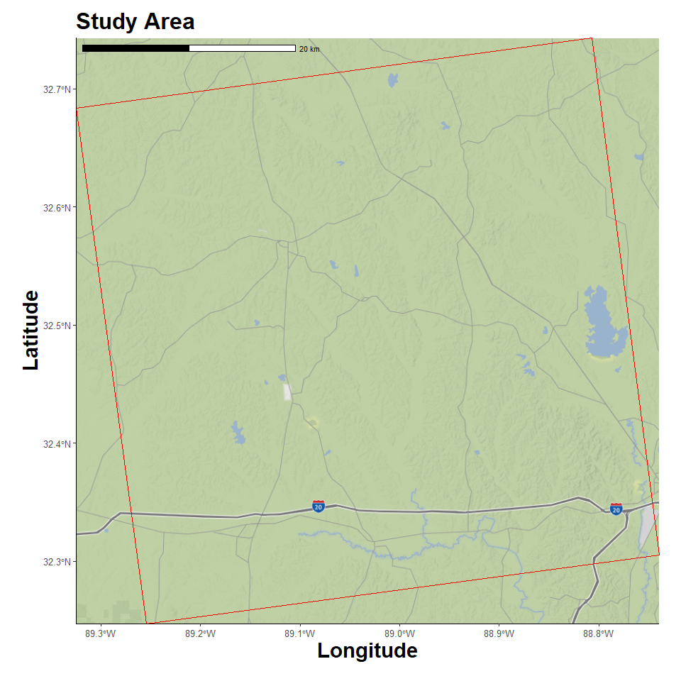
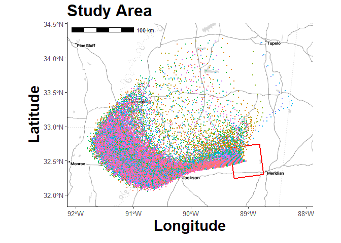
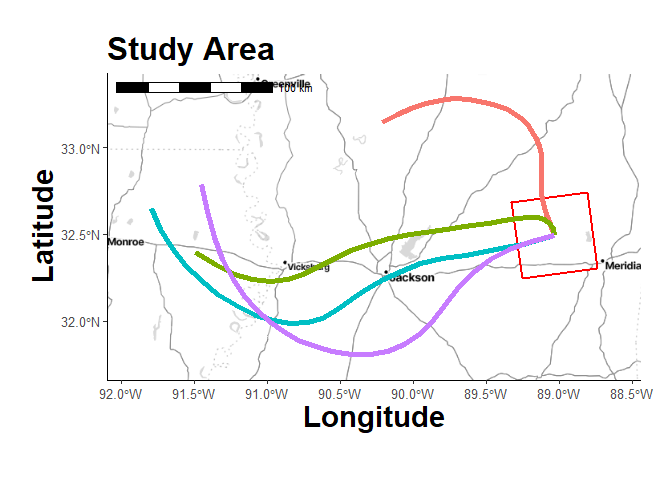
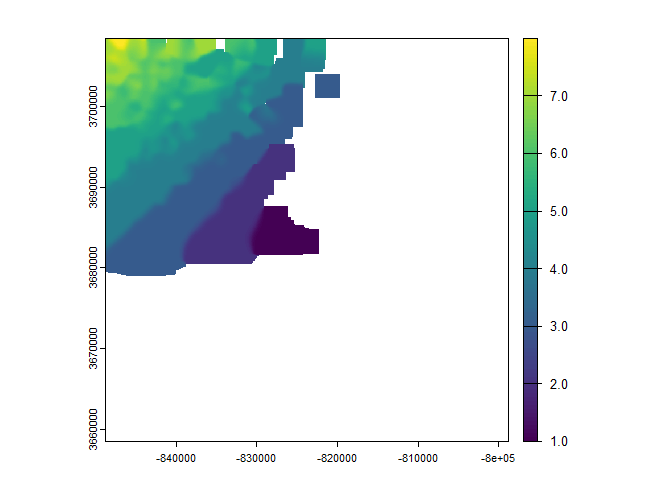
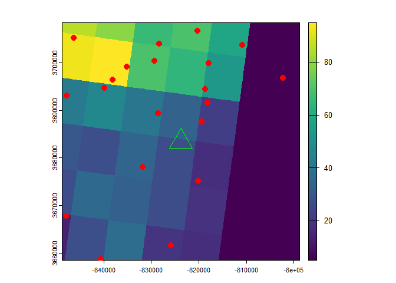
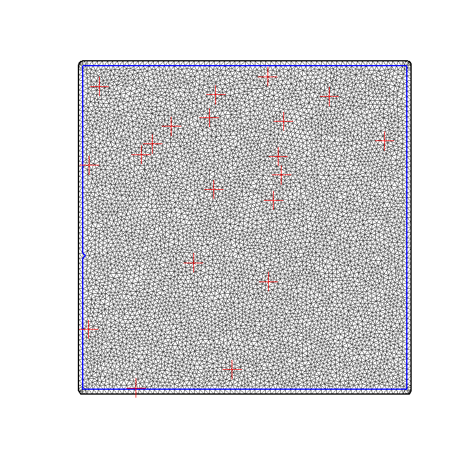

Spatiotemporal Smoothing and other assortative explorations
4/19/25
- Libraries
- Custom Functions
- Create Study Area Grid
- Location Map
- Dispersion Model
- Trajectory Model
- Plume Map
- Get Landcover
- Get Chicken Density
- Random Farm Locations
- Farm Exposure Time
- SpatioTemporal Anaysis
- Get Nodes
- Replicate Timesteps
- Field Index
- Data Stack
- Formula
- Run Model
- Spatial Fields
- Plume Density
Libraries
Hide code
library(tidyverse)
library(here)
library(ggmap)
library(ggspatial)
library(sf)
library(terra)
library(gt)
library(pals)
library(INLA)
library(splitr)
# devtools::install_github("rich-iannone/splitr")Custom Functions
Hide code
source(here("R/utilities.R"))
source_dir(here("R"))Create Study Area Grid
Choosing an arbitrary geographic point. It will serve as the emission point source location and be used to define study area extent.
Hide code
source_origin <- c(-89.031407, 32.494830) # Newton County, Mississippi
source_vect <- vect(matrix(source_origin , ncol = 2), type = "points", crs = "EPSG:4326")
timezone_utc <- get_timezone_utc(source_origin)Loading required package: lutzHide code
user_projection <- "+proj=utm +zone=18 +datum=WGS84 +units=m +no_defs"
grid_raster <- create_spatraster_grid(source_origin, user_projection, extent_km = 50) # projected
grid_raster_geo <- create_spatraster_grid_geo(source_origin) # no proj
source_vect <- project(source_vect, user_projection)Location Map
Register Stadia Maps API to pull background images.
Hide code
map_api <- yaml::read_yaml(here("local", "secrets.yaml"))
register_stadiamaps(key = map_api$stadi_api)Vicinity around source.
Hide code
map_plot <- map_grid(grid_raster)ℹ © Stadia Maps © Stamen Design © OpenMapTiles © OpenStreetMap contributors.
Coordinate system already present. Adding new coordinate system, which will
replace the existing one.Hide code
map_plot
Dispersion Model
Hide code
sim_dispersion <- create_dispersion_model() %>%
add_source(
name = "plume_1",
lon = source_origin[1],
lat = source_origin[2],
height = 5,
rate = 100,
pdiam = 2.5,
density = 1.5,
shape_factor = 0.9,
release_start = ymd_hm("2020-02-16 10:00"),
release_end = ymd_hm("2020-02-16 10:00") + hours(1)
) %>%
add_dispersion_params(
start_time = ymd_hm("2020-02-16 10:00"),
end_time = ymd_hm("2020-02-16 10:00") + hours(24),
direction = "forward",
met_type = "reanalysis",
met_dir = here("local/plume"),
exec_dir = here("local/plume"),
clean_up= FALSE
) %>%
run_model()
# save
saveRDS(sim_dispersion, here("local/plume/sim_dispersion.rds"))Hide code
# load saved run
sim_dispersion <- readRDS(here("local/plume/sim_dispersion.rds"))
plume_table <- sim_dispersion$disp_df
head(plume_table)# A tibble: 6 × 5
particle_i hour lat lon height
<chr> <int> <dbl> <dbl> <dbl>
1 00001 1 32.5 -89.1 24
2 00002 1 32.5 -89.1 88
3 00003 1 32.5 -89.1 9
4 00004 1 32.5 -89.1 12
5 00005 1 32.5 -89.1 11
6 00006 1 32.5 -89.1 26Trajectory Model
Hide code
trajectory_model <-
create_trajectory_model() %>%
add_trajectory_params(
traj_name= "traj_2",
lon = source_origin[1],
lat = source_origin[2],
height = 5,
duration = 24,
days = c("2020-02-16"),
daily_hours = c(0, 6, 12, 18),
model_height = 5000,
direction = "forward",
extended_met = TRUE,
met_type = "reanalysis",
met_dir = here("local/traj"),
exec_dir = here("local/traj"),
clean_up = FALSE
) %>%
run_model()
# save
saveRDS(trajectory_model, here("local/traj/trajectory_model.rds"))Hide code
# load saved run
trajectory_model <- readRDS(here("local/traj/trajectory_model.rds"))
traj_table <- trajectory_model$traj_df
head(traj_table)# A tibble: 6 × 21
run receptor hour_along traj_dt lat lon height
<int> <int> <int> <dttm> <dbl> <dbl> <dbl>
1 1 1 0 2020-02-16 00:00:00 32.5 -89.0 5
2 1 1 1 2020-02-16 01:00:00 32.6 -89.1 4.4
3 1 1 2 2020-02-16 02:00:00 32.6 -89.1 4.2
4 1 1 3 2020-02-16 03:00:00 32.7 -89.1 4.3
5 1 1 4 2020-02-16 04:00:00 32.7 -89.1 4.9
6 1 1 5 2020-02-16 05:00:00 32.8 -89.1 5.9
# ℹ 14 more variables: traj_dt_i <dttm>, lat_i <dbl>, lon_i <dbl>,
# height_i <dbl>, pressure <dbl>, theta <dbl>, air_temp <dbl>,
# rainfall <dbl>, mixdepth <dbl>, rh <dbl>, sp_humidity <dbl>,
# h2o_mixrate <dbl>, terr_msl <dbl>, sun_flux <dbl>Plume Plots
Hide code
plume_plot <- map_grid2(grid_raster, sim_dispersion$disp_df, group_col = "particle_i", vector_type = "point")ℹ © Stadia Maps © Stamen Design © OpenMapTiles © OpenStreetMap contributors.
Coordinate system already present. Adding new coordinate system, which will
replace the existing one.Hide code
plume_plot
(Animation doesn’t render in static version of markdown)
Hide code
animated_plume <- animate_plume_simple(sim_dispersion$disp_df, group_col = "particle_i", point_size = 0.5)
animated_plumeTrajectory Plots
Hide code
traj_plot <- map_grid2(grid_raster, trajectory_model$traj_df, group_col = "run",
vector_type = "line", line_size = 2)ℹ © Stadia Maps © Stamen Design © OpenMapTiles © OpenStreetMap contributors.
Coordinate system already present. Adding new coordinate system, which will
replace the existing one.Hide code
traj_plot
Plume Map
Mapping post emission hour.
Hide code
particle_locs <- vect(
plume_table,
geom = c("lon","lat"),
crs = crs(grid_raster_geo)
)
particle_locs <- project(
x = particle_locs,
y = grid_raster
)Rasterize
Hide code
hour_min_r <- rasterize(
x = particle_locs,
y = grid_raster,
field = "hour",
fun = function(x, ...) min(x, na.rm = TRUE),
background = NA,
touches = FALSE
)
plot(hour_min_r)
# Smooth to better visualize
radius <- 500 #m
w <- terra::focalMat(hour_min_r, d = radius, type = "Gauss")
hour_smooth <- terra::focal(
x = hour_min_r,
w = w,
fun = mean,
na.rm = TRUE
)
# save
writeRaster(hour_smooth, here("local/plume/hour_smooth.tif"), overwrite = TRUE)Hide code
hour_smooth <- rast(here("local/plume/hour_smooth.tif"))
plot(hour_smooth)
Get Landcover
Source: USGS MLRC
Hide code
nlcd <- rast(here("local/nlcd/Annual_NLCD_LndCov_2023_CU_C1V0.tif")) # NLCD 2023
nlcd <- project(
x = nlcd,
y = grid_raster,
method = "near"
)
nlcd <- crop(nlcd, grid_raster)
nlcd <- resample(
x = nlcd,
y = grid_raster,
method = "near"
)NLCD Classification
Hide code
nlcd_table <- read_csv(here("local/nlcd/nlcd_classes.csv"))Rows: 16 Columns: 2
── Column specification ────────────────────────────────────────────────────────
Delimiter: ","
chr (1): Description
dbl (1): Class
ℹ Use `spec()` to retrieve the full column specification for this data.
ℹ Specify the column types or set `show_col_types = FALSE` to quiet this message.Hide code
nlcd_table# A tibble: 16 × 2
Class Description
<dbl> <chr>
1 11 Open Water
2 12 Perennial Ice/Snow
3 21 Devloped Open Space
4 22 Developed Low Intensity
5 23 Developed Medium Intensity
6 24 Developed High Intensity
7 31 Barren
8 41 DeciduousForest
9 42 Evergreen Forest
10 43 Mixed Forest
11 52 Shrub/Scrub
12 71 Grassland Herbaceous
13 81 Pasture/Hay
14 82 Cultivated Crops
15 90 Woody Wetlands
16 95 Emergent Herbaceous WetlandsGet Chicken Density
Source: Livestock of the World
Hide code
chik_dens <- rast(here("assets/GLW4-2020.D-DA.CHK.tif"))
chik_dens <- project(
x = chik_dens,
y = grid_raster,
method = "near"
)
chik_dens <- crop(chik_dens, grid_raster)
chik_dens <- resample(
x = chik_dens,
y = grid_raster,
method = "near"
)
# density to probability range
farm_prob <- rescale_raster(chik_dens, new_min = 5, new_max = 95)Random Farm Locations
Using chicken density to weight random assignment of farm locations.
Hide code
farms_n <- 20
set.seed(123)
pts_mat <- spatSample(
x = farm_prob,
size = farms_n,
method = "weights",
na.rm = TRUE,
xy = TRUE
)
farm_locs <- vect(
as.matrix(pts_mat[, c("x","y")]),
type = "points",
crs = crs(farm_prob)
)
plot(farm_prob)
plot(farm_locs, pch = 20, cex=2, col = "red", add=T)
plot(source_vect, pch = 2, cex=4, col= "green", add=T)
Farm Exposure Time
Hide code
farm_locs$exposed_hour <- extract(hour_smooth, farm_locs)[,2]
farm_locs$exposed_hour[is.na(farm_locs$exposed_hour)] = 0
# plume arrival times
range(farm_locs$exposed_hour)[1] 0.000000 7.014517SpatioTemporal Anaysis
Creating continuous surface from plume estimation ### Mesh
Hide code
library(raster)
select <- dplyr::select
grid_extent_poly <- vect(ext(grid_raster), crs = crs(grid_raster))
points_sp <- as(farm_locs, "Spatial")
dom_bnds <- as(grid_extent_poly, "Spatial")
dom_bnds <- inla.sp2segment(dom_bnds)
set.seed(1976)
mesh.dom <- inla.mesh.2d(boundary = dom_bnds,
loc = points_sp,
cutoff = 500,
max.edge = c(500, 5000),
offset = c(500,700),
min.angle = 30)
mesh.dom$n[1] 6974Hide code
plot(mesh.dom)
plot(points_sp, col="red", cex=3, shape= 1, add=T)
Get Nodes
Hide code
dd = as.data.frame(cbind(mesh.dom$loc[,1],
mesh.dom$loc[,2]))
names(dd) = c("x", "y")
dd$set <- "node"Replicate Timesteps
Copy mesh nodes for each timestep
Hide code
particle_df <- as.data.frame(particle_locs)
particle_df <- cbind(particle_df , crds(particle_locs)) %>%
mutate(set = "particle") %>%
select(-particle_i, -height)
t_steps <- max(ceiling(farm_locs$exposed_hour)) # time in strudy area
comb_data <- data.frame()
for(i in 1:t_steps){
tmp_particle <- particle_df %>%
filter(hour == i)
tmp_node <- dd %>%
mutate(hour = i)
comb_data <- rbind(comb_data, tmp_particle, tmp_node)
}
dim(comb_data)[1] 75952 4Hide code
range(comb_data$hour)[1] 1 8Hide code
unique(comb_data$set)[1] "particle" "node" Field Index
Hide code
k <- length(unique(comb_data$hour))
k # knots[1] 8Hide code
locs <- cbind(comb_data$x, comb_data$y)
# Match locations in data frame to locations in mesh
A.mat <- inla.spde.make.A(mesh.dom,
alpha = 2,
loc=locs,
group = comb_data$hour)
spde0 <- inla.spde2.pcmatern(mesh.dom, alpha = 2,
prior.range=c(500, 0.8), # tight
prior.sigma=c(1, 0.01),
constr = TRUE)
Field.pf <- inla.spde.make.index("Field.pf",
spde0$n.spde,
n.group=k)Data Stack
Hide code
est.lst <- list(c(Field.pf,
list(intercept1 = 1)),
list(x_tmp = comb_data[,"x"],
hour_step.1 = comb_data[,"hour"],
hour_step.2 = comb_data[,"hour"],
hour_step.3 = comb_data[,"hour"]))
comb_data$Y <- ifelse(comb_data$set == "particle",1, 0)
est.stk <- inla.stack(data = list(Y = comb_data$Y),
A = list(A.mat, 1),
effects = est.lst,
tag = "est.0")Formula
Hide code
pcprior_1 <- list(prec = list(prior="pc.prec", param = c(1, 0.01)))
rho_pc <- list(rho = list(prior = "pc.cor1", param = c(0, 0.9)))
cont_g <- list(model = "ar1", hyper = rho_pc)
hc1 = list(theta = list(prior = "normal", param = c(0, 10)))
ctr.g = list(model = "iid", hyper = hc1) #sanity check
Formula.1 <- Y ~ -1 + intercept1 +
f(Field.pf,
model=spde0,
group = Field.pf.group,
control.group=ctr.g)Run Model
Hide code
# theta_1 <- c(5.929494, 3.129386, 0.397794)
Model.0 <- inla(Formula.1,
#num.threads = 12,
data = inla.stack.data(est.stk),
family = c("gaussian"), # sanity check
verbose = FALSE,
control.fixed = list(prec = 1, prec.intercept=1),
control.predictor = list(
A = inla.stack.A(est.stk),
compute = TRUE,
link = 1),
# control.mode = list(restart = TRUE, theta = theta_1),
control.inla = list(strategy="adaptive",
int.strategy = "eb"),
control.compute=list(dic = FALSE, cpo = FALSE, waic = FALSE))
# summary(Model.0)
saveRDS(Model.0, here("local/plume/model0.rds"))load prior run
Hide code
Model.0 <- readRDS(here("local/plume/model0.rds"))Spatial Fields
Create a dense point grid
Hide code
blank.r <- grid_raster
blank.r[!is.na(blank.r)] <- 0
grid_pnts <- as.points(blank.r)
names(grid_pnts) <- "cell_value"
grid_coords <- grid_pnts %>%
geom() %>%
as.data.frame() Associate dense points to mesh.
Hide code
Ap <- inla.spde.make.A(mesh.dom,
loc = cbind(grid_coords[,"x"],
grid_coords[,"y"]))Extract model estimates and rasterize
Hide code
mrf_pf <- cbind(Model.0$summary.random$Field.pf$mean,
Field.pf$Field.pf.group)
mrf_pf_v <- list()
mrf_pf_v <- split(mrf_pf[,1], mrf_pf[,2])
rst_list <- vector("list", length(mrf_pf_v))
for(i in 1:length(mrf_pf_v)){
grid_pnts$tmp_attr <- drop(Ap %*% mrf_pf_v[[i]])
tmp_r <- rasterize(grid_pnts,
blank.r,
"tmp_attr",
background = NA)
names(tmp_r) <- paste0("Hour ", i)
rst_list[[i]] <- tmp_r
}
hour_stack <- rast(rst_list)
hour_stackPlume Density
Hide code
df <- as.data.frame(hour_stack, xy = TRUE)
df_long <- pivot_longer(
df,
cols = -c(x, y),
names_to = "hour_layer",
values_to = "hour_value"
)
df_long$hour_value[df_long$hour_value < 0] <- 0
sf_source <- st_as_sf(source_vect)
sf_farms <- st_as_sf(farm_locs)
ggp <- ggplot(df_long, aes(x = x, y = y, fill = hour_value)) +
geom_raster() +
facet_wrap(~ hour_layer, ncol = 4) +
coord_equal(expand = FALSE) +
#scale_fill_viridis_c(option = "turbo", na.value = "transparent") +
scale_fill_gradientn(
colors = rev(pals::cubehelix(30)[1:26]),
na.value = "white",
limits = c(0, 1),
name = "Density"
) +
theme_minimal() +
theme(
panel.grid.major = element_blank(),
panel.grid.minor = element_blank(),
legend.position = "bottom",
legend.title = element_text(size = 16, face = "bold"),
legend.text = element_text(size = 10, face = "bold"),
legend.key.width = unit(3, "line"),
legend.key.height = unit(1, "line"),
strip.text = element_text(size = 18, face = "bold", color = "gray40"),
axis.title.x = element_text(size = 20, face = "bold"),
axis.title.y = element_text(size = 20, face = "bold"),
axis.text.x = element_text(size = 8, face = "bold"),
axis.text.y = element_text(size = 10, face = "bold"),
plot.title = element_text(size = 22, face = "bold", hjust = 0.5)
) +
labs(fill = "Hour",
title = "Relative Particle Density",
x = "Easting", y = "Northing") +
geom_sf(
data = sf_source,
inherit.aes = FALSE,
color = "red",
stroke = 1,
shape = 2,
size = 3
) +
geom_sf(
data = sf_farms,
inherit.aes = FALSE,
color = "darkgreen",
shape = 1,
size = 2
)
ggsave(
filename = "plume_density.png",
plot = ggp,
path = here("assets"),
width = 11,
height = 8.5,
units = "in",
dpi = 100,
device = "png",
bg = "white"
)